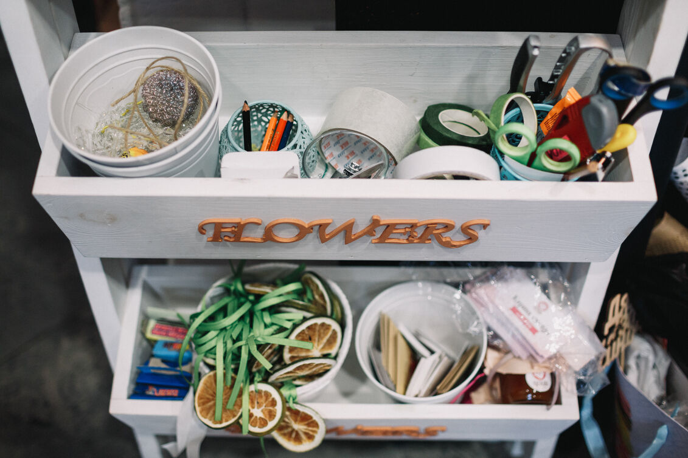

DIY Storage Hacks for Small Spaces
Maximize every inch with clever DIY shelving and hidden storage solutions.
Explore hands-on DIY projects, vintage crafts, and creative hobbies you can start today.
Discover ProjectsAt CraftoryZone, we believe that creativity knows no age limit. Our mission is to inspire adults to rediscover the joy of making things with their hands through simple, rewarding DIY projects.
Whether you're an empty nester looking for a new hobby, a busy professional seeking a creative outlet, or someone who simply loves the satisfaction of creating something beautiful, we're here to guide your journey.
From traditional woodworking to modern upcycling techniques, our carefully curated projects are designed to be accessible, enjoyable, and deeply fulfilling.
Discover step-by-step guides for your next creative adventure
Maximize every inch with clever DIY shelving and hidden storage solutions.
Turn salvaged wood into rustic furniture with charm and character.
Add cozy ambiance to your yard with solar-powered jar lights.
Create textured wall hangings using simple materials and bold colors.
Preserve nature’s beauty with handmade bookmarks and frames.
Make trinket dishes, plant tags, and more—no kiln needed!
The CraftoryZone community is filled with passionate creators, hobbyists, and DIY lovers from all around.

“CraftoryZone has completely reignited my love for crafting! I always find inspiration for my weekend DIY projects.”

“The CraftoryZone DIY kits are amazing – great quality and super beginner-friendly. I’ve made gifts, decor!”
“As a dad, it has given me fun and meaningful ways to spend time with my kids. Every project turns a memory!”
Have a question about a project or want to share your creation? We'd love to hear from you!
Join thousands of makers sharing their creations and getting inspired by new projects every day.